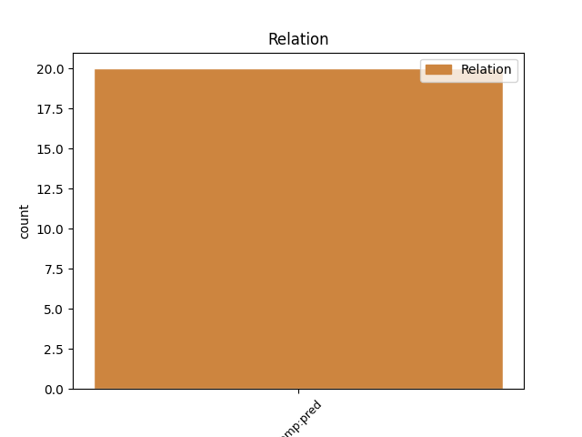
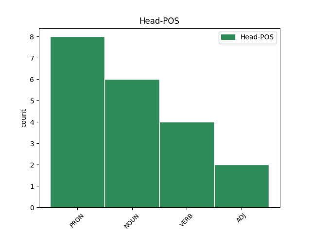
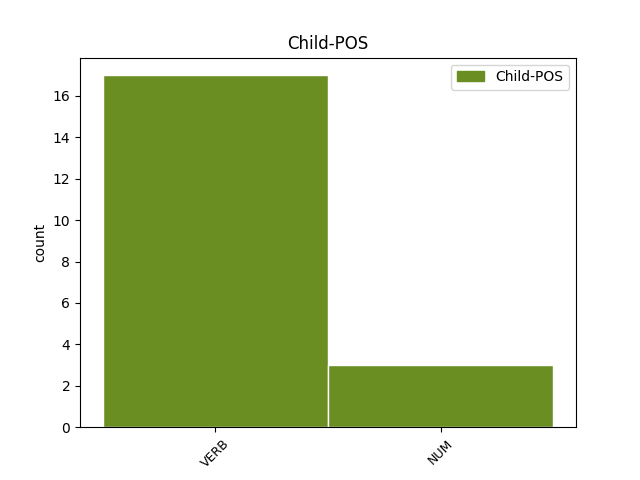

Distribution of features within this leaf



Agreement Rules sorted by frequency.
- When the dependent token is the predicative complements(comp:pred) of the head token, and the head token is PRON and the dependent token is VERB.
1 quae qui PRON p-s---fn- Case=Nom|Gender=Fem|Number=Sing 0 _ _ _
2 mihi _ _ _ _ 0 _ _ _
3 dum _ _ _ _ 0 _ _ _
4 placata placo VERB v-srppfn- Aspect=Perf|Case=Nom|Gender=Fem|Number=Sing|Tense=Past|VerbForm=Part|Voice=Pass 1 comp:pred _ LId=placo1
5 aderit _ _ _ _ 0 _ _ _
6 , _ _ _ _ 0 _ _ _
7 non _ _ _ _ 0 _ _ _
8 ulla _ _ _ _ 0 _ _ _
9 verebor _ _ _ _ 0 _ _ _
10 regna _ _ _ _ 0 _ _ _
11 vel _ _ _ _ 0 _ _ _
12 Alcinoi _ _ _ _ 0 _ _ _
13 munera _ _ _ _ 0 _ _ _
14 despicere _ _ _ _ 0 _ _ _
15 . _ _ _ _ 0 _ _ _
1 patere _ _ _ _ 0 _ _ _
2 tua _ _ _ _ 0 _ _ _
3 consilia _ _ _ _ 0 _ _ _
4 non _ _ _ _ 0 _ _ _
5 sentis _ _ _ _ 0 _ _ _
6 , _ _ _ _ 0 _ _ _
7 constrictam constringo VERB v-srppfa- Aspect=Perf|Case=Acc|Gender=Fem|Number=Sing|Tense=Past|VerbForm=Part|Voice=Pass 13 comp:pred _ _
8 iam _ _ _ _ 0 _ _ _
9 horum _ _ _ _ 0 _ _ _
10 omnium _ _ _ _ 0 _ _ _
11 scientia _ _ _ _ 0 _ _ _
12 teneri _ _ _ _ 0 _ _ _
13 coniurationem conjuratio NOUN n-s---fa- Case=Acc|Gender=Fem|Number=Sing 0 _ _ _
14 tuam _ _ _ _ 0 _ _ _
15 non _ _ _ _ 0 _ _ _
16 vides _ _ _ _ 0 _ _ _
17 ? _ _ _ _ 0 _ _ _
1 Cynthia Cynthia NOUN n-s---fn- Case=Nom|Gender=Fem|Number=Sing 0 _ _ _
2 prima primus NUM m-s---fn- Case=Nom|Gender=Fem|Number=Sing 1 comp:pred _ _
3 suis _ _ _ _ 0 _ _ _
4 miserum _ _ _ _ 0 _ _ _
5 me _ _ _ _ 0 _ _ _
6 cepit _ _ _ _ 0 _ _ _
7 ocellis _ _ _ _ 0 _ _ _
8 , _ _ _ _ 0 _ _ _
9 contactum _ _ _ _ 0 _ _ _
10 nullis _ _ _ _ 0 _ _ _
11 ante _ _ _ _ 0 _ _ _
12 cupidinibus _ _ _ _ 0 _ _ _
13 . _ _ _ _ 0 _ _ _
1 a _ _ _ _ 0 _ _ _
2 pereat _ _ _ _ 0 _ _ _
3 , _ _ _ _ 0 _ _ _
4 quicumque quicumque PRON p-s---mn- Case=Nom|Gender=Masc|Number=Sing 0 _ _ _
5 ratis _ _ _ _ 0 _ _ _
6 et _ _ _ _ 0 _ _ _
7 vela _ _ _ _ 0 _ _ _
8 paravit _ _ _ _ 0 _ _ _
9 primus primus NUM m-s---mn- Case=Nom|Gender=Masc|Number=Sing 4 comp:pred _ _
10 et _ _ _ _ 0 _ _ _
11 invito _ _ _ _ 0 _ _ _
12 gurgite _ _ _ _ 0 _ _ _
13 fecit _ _ _ _ 0 _ _ _
14 iter _ _ _ _ 0 _ _ _
15 ! _ _ _ _ 0 _ _ _
Disagree Examples:
1 quidam _ _ _ _ 0 _ _ _
2 contra _ _ _ _ 0 _ _ _
3 miseriti misereor VERB v-prpdmn- Aspect=Perf|Case=Nom|Gender=Masc|Number=Plur|Tense=Past|VerbForm=Part|Voice=Act 0 _ _ _
4 Periturae pereo VERB v-sfpafg- Case=Gen|Gender=Fem|Number=Sing|Tense=Fut|VerbForm=Part|Voice=Act 3 comp:pred _ _
5 quippe _ _ _ _ 0 _ _ _
6 , _ _ _ _ 0 _ _ _
7 quamvis _ _ _ _ 0 _ _ _
8 nemo _ _ _ _ 0 _ _ _
9 laederet _ _ _ _ 0 _ _ _
10 , _ _ _ _ 0 _ _ _
11 Misere _ _ _ _ 0 _ _ _
12 panem _ _ _ _ 0 _ _ _
13 ut _ _ _ _ 0 _ _ _
14 sustineret _ _ _ _ 0 _ _ _
15 spiritum _ _ _ _ 0 _ _ _
16 . _ _ _ _ 0 _ _ _
1 abeunt _ _ _ _ 0 _ _ _
2 securi _ _ _ _ 0 _ _ _
3 domum _ _ _ _ 0 _ _ _
4 , _ _ _ _ 0 _ _ _
5 Quasi _ _ _ _ 0 _ _ _
6 inventuri invenio VERB v-pfpamn- Case=Nom|Gender=Masc|Number=Plur|Tense=Fut|VerbForm=Part|Voice=Act 0 _ _ _
7 mortuam morior VERB v-srpdfa- Aspect=Perf|Case=Acc|Gender=Fem|Number=Sing|Tense=Past|VerbForm=Part|Voice=Act 6 comp:pred _ _
8 postridie _ _ _ _ 0 _ _ _
9 . _ _ _ _ 0 _ _ _
1 nam _ _ _ _ 0 _ _ _
2 minima _ _ _ _ 0 _ _ _
3 commoda _ _ _ _ 0 _ _ _
4 non _ _ _ _ 0 _ _ _
5 minimo _ _ _ _ 0 _ _ _
6 sectantis _ _ _ _ 0 _ _ _
7 discrimine _ _ _ _ 0 _ _ _
8 similes similis ADJ a-p---ma- Case=Acc|Gender=Masc|Number=Plur 0 _ _ _
9 aiebat _ _ _ _ 0 _ _ _
10 esse _ _ _ _ 0 _ _ _
11 aureo _ _ _ _ 0 _ _ _
12 hamo _ _ _ _ 0 _ _ _
13 piscantibus piscor VERB v-pppdmd- Case=Dat|Gender=Masc|Number=Plur|Tense=Pres|VerbForm=Part|Voice=Act 8 comp:pred _ SpaceAfter=No
14 , _ _ _ _ 0 _ _ _
15 cuius _ _ _ _ 0 _ _ _
16 abrupti _ _ _ _ 0 _ _ _
17 damnum _ _ _ _ 0 _ _ _
18 nulla _ _ _ _ 0 _ _ _
19 captura _ _ _ _ 0 _ _ _
20 pensari _ _ _ _ 0 _ _ _
21 posset _ _ _ _ 0 _ _ _
22 . _ _ _ _ 0 _ _ _
1 circumsteterat _ _ _ _ 0 _ _ _
2 interim _ _ _ _ 0 _ _ _
3 Palatium _ _ _ _ 0 _ _ _
4 publica _ _ _ _ 0 _ _ _
5 expectatio _ _ _ _ 0 _ _ _
6 , _ _ _ _ 0 _ _ _
7 magni _ _ _ _ 0 _ _ _
8 secreti secerno VERB v-srppng- Aspect=Perf|Case=Gen|Gender=Neut|Number=Sing|Tense=Past|VerbForm=Part|Voice=Pass 9 comp:pred _ _
9 impatiens impatiens ADJ a-s---fn- Case=Nom|Gender=Fem|Number=Sing 0 _ _ _
10 ; _ _ _ _ 0 _ _ _
1 Haec _ _ _ _ 0 _ _ _
2 certe _ _ _ _ 0 _ _ _
3 deserta desero VERB v-prppna- Aspect=Perf|Case=Acc|Gender=Neut|Number=Plur|Tense=Past|VerbForm=Part|Voice=Pass 0 _ _ _
4 loca _ _ _ _ 0 _ _ _
5 et _ _ _ _ 0 _ _ _
6 taciturna _ _ _ _ 0 _ _ _
7 querenti queror VERB v-spp-md- Case=Dat|Gender=Masc|Number=Sing|Tense=Pres|VerbForm=Part 3 comp:pred _ SpaceAfter=No
8 , _ _ _ _ 0 _ _ _
9 et _ _ _ _ 0 _ _ _
10 vacuum _ _ _ _ 0 _ _ _
11 Zephyri _ _ _ _ 0 _ _ _
12 possidet _ _ _ _ 0 _ _ _
13 aura _ _ _ _ 0 _ _ _
14 nemus _ _ _ _ 0 _ _ _
15 . _ _ _ _ 0 _ _ _